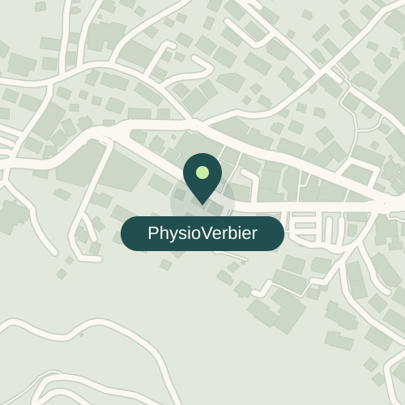

<!doctype html>
<html lang="en">
<meta charset="utf-8">
<title>PhysioVerbier · Find your way</title>
<style>
@font-face{font-family:Montserrat;src:url('../node_modules/@fontsource/montserrat/files/montserrat-latin-500-normal.woff2');font-weight:500}
@font-face{font-family:Manrope;src:url('../node_modules/@fontsource/manrope/files/manrope-latin-400-normal.woff2');font-weight:400}
*{box-sizing:border-box}html,body{margin:0;width:1200px;height:630px;overflow:hidden;background:#f3eee4;color:#285957}
.card{position:relative;width:1200px;height:630px;font-family:Manrope,sans-serif}
.logo{position:absolute;left:54px;top:44px;width:265px;height:112px;object-fit:contain;object-position:left center}
h1{position:absolute;left:54px;top:217px;margin:0;font:500 82px/.99 Montserrat,sans-serif;letter-spacing:-4.5px}
.address{position:absolute;left:54px;bottom:50px;margin:0;font-size:34px;line-height:1.35;letter-spacing:-.3px}
.map{position:absolute;left:627px;top:40px;width:533px;height:550px;border-radius:28px;overflow:hidden;background:#e3e8dc}
.map img{display:block;width:100%;height:100%;object-fit:cover}
.credit{position:absolute;bottom:15px;right:17px;margin:0;font:400 13px Manrope,sans-serif;color:#285957;background:#f3eee4;padding:4px 8px;border-radius:5px}
</style>
<main class="card">

<h1>Find your<br>way.</h1>
<p class="address">Route de Verbier Station 74<br>1936 Verbier</p>
<div class="map"><p class="credit">© OpenStreetMap contributors</p></div>
</main>
</html>
